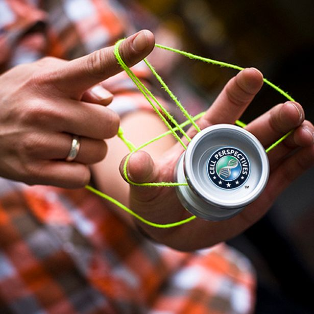

El yoyo es un juguete formado por dos discos unidos por un eje central, con una cuerda enrollada alrededor. Se hace subir y bajar mediante movimientos de la muñeca.
Para empezar, se enrolla la cuerda alrededor del eje del yoyo y se ajusta el lazo al dedo medio de la mano dominante. Se sostiene el yoyo con la palma hacia arriba y se lanza hacia abajo con un movimiento suave de muñeca.
Cuando el yoyo llega al final de la cuerda, se da un tirón seco hacia arriba para que suba de nuevo a la mano. Este es el movimiento básico llamado "dormir" o "lanzar y regresar".
A partir de ahí se pueden aprender trucos más complejos: "el perrito", "el columpio", "la vuelta al mundo", "caminar el perro", "el molino", "la cuna" y muchos más.
👥 Jugadores: De 1 a 4 participantes.
⏱️ Duración: Cada truco segundos. Sesión: 20-40 min.
🎯 Objetivo: Dominar el movimiento básico y aprender trucos.
🧰 Materiales: Un yoyo con cuerda a la altura del ombligo.
• Ajusta la cuerda: Debe llegar al ombligo.
• Muñeca relajada: El movimiento sale de la muñeca.
• Paciencia: Cada truco requiere muchos intentos.
Sigue la secuencia: haz clic en los números en orden.